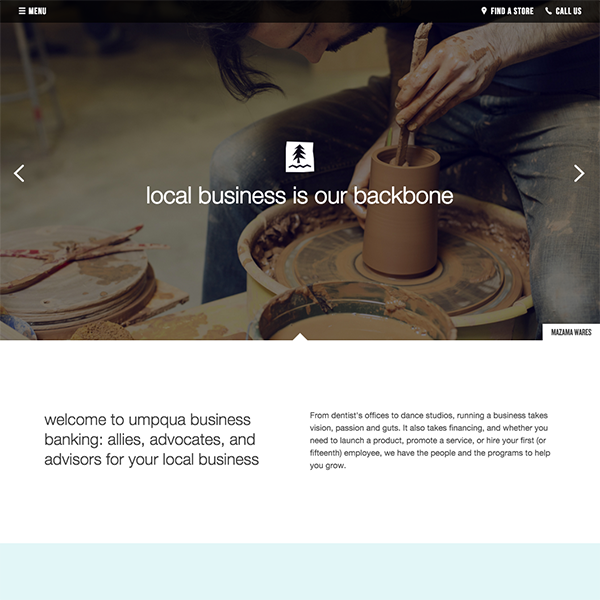
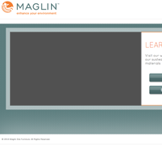
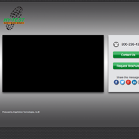
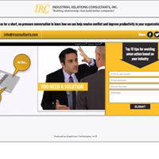

Web Portfolio
Current Projects
View Umpqua Bank's Made to Grow Website
Made to Grow is a minisite created to introduce Umpqua Bank to new customers. It covers many topics, including Umpqua’s contributions to the arts, involvement in local businesses, and educational events focusing on financial topics. The main theme uniting the many sections of this microsite revolves around personal and financial growth while establishing Umpqua as a down-to-earth partner in achieving those goals.
When I was brought on board the project was behind schedule, plagued with issues, and was rapidly approaching its fixed launch date. Common problems to be sure, with stemming from a common cause. I’ve seen interdepartmental miscommunication to be virtually universal amoung the hundreds of companies I’ve worked with. It can be an especially deep problem when those departments are comprised of people with very different backgrounds, methodologies, and even worldviews as is often the case between Marketeers, Designers, and Engineers.
As UX/UI Engineer, my official duties were to build menus and other UI elements, make the site more mobile friendly, and port all HTML, CSS, and Javascript into their CMS, Ektron. But the real challenge was to draw from my interdisciplinary background and marketing experience to improve collaboration between the marketing, design, and engineering teams. I helped stakeholders understand the design and engineering work necessary to bring a feature to completion and balance that against the value of its messaging and/or usefulness to correctly prioritize work. Keeping in mind the marketing strategies and messaging, I proposed and created mockups of new designs when existing designs caused legal, usability, or technical issues. I educated the engineering team on design and messaging concepts when addressing issues so that our solutions stayed consistent with the overall strategies.
View the Stogle Studios Website
Stogle Studios helps independent artists and authors reach their audiences and create online storefronts for their products. I chose playfully saturated colors and simple geometric shapes in a clean, crisp space to appeal to this diverse audience. Photography is used create textured backdrops that evoke the creative processes of both writing and illustrating. The greatest challenge in designing this logo and website is that published content can include anything from children's picture books to dark graphic novels.
View the Heretics Website
The Heretics website is designed to introduce the Heretics graphic novel to potential publishers. The goal of this site is to convey the story’s noir atmosphere while presenting a positive and engaging experience. Although deep blacks and dark reds are pulled from the cover artwork, much of the space is filled with parchment color and accented with oranges and yellows to keep the overall look bright and colorful. Reading the site feels similar to reading ancient documents in medieval candlelight. This look resonates with the novel's main themes: goodness is often enshrouded in darkness, and good and evil are not as easy to tease apart as we would like to believe.
Case Studies in Problem Solving
Identifying Problems and Taking Action
When I discovered that AngelVision was using a confusing, plain text email unsubscribe page, I knew I’d found a serious problem. I informed the Email Marketing team of this issue and educated them as to why a better page would not only reduce the number of unsubscribes, but could even re-engage customers. I formulated a plan to take action and resolve the issue within 1 week.
The objective: create an unsubscribe page that would encourage users to stick around and even re-engage with us. The previous page was basic HTML, with long winded and confusing text and non-intuitive buttons.
I intended to create a page that was funny, yet pulled at the heartstrings. Viewers should know that we are truly saddened to see them leave, without making them feel nagged — that would only make them feel resentful. Ideally you want to get a chuckle with just a touch of guilt. This mixture encourages them to stay, but it is a delicate balance to reach.
I tasked our design team to brainstorm a few ideas each, on a Friday when everyone feels a bit playful. Meanwhile, I assigned a programmer to build the page functionality. In addition to removing people from the database, I wanted the page to have more buttons and to track more data about what happens when viewers reach the page.
I went through the design ideas and chose the strongest contender to develop. I gave the character more personality and fleshed out the background. Finally, I wrote the text and handed it over to the programmer to implement. Within 1 week of seeing the need for a new unsubscribe page, we had a new page live and saw an immediate 12% drop in unsubscribes.
Marketing: Creating Relationships
Developing a brand, in a sense, is like giving a company a personality and allowing customers to forge a relationship with that personality. The two main reason this is important is because it makes the brand more memorable and it creates an opportunity to earn loyalty. Rather ironic that when marketing myself — an actual person — I found I needed to do the same thing. Resumes do not capture who I am as a person. My portfolio captures an aspect of who I am, but not even close to the complete picture. Resume reading software and complex weeding practices only further weaken that human connection.
I wanted to do something that left an impression of me as a human being. At the same time I feel this is a real benefit to potential employers because often what they really need is someone who will fit in with their culture. This can be found in the interview, of course, but that come last in this process. When one considers that it is easier to learn a new skill then change one's personality, this can be a bit backwards.
This self-promotion piece was designed to communicate my personality and work attitudes to potential employers while at the same time showing what makes me unique. This project uses everything I love doing: ideation, designing, writing, illustrating, animating, and programming. Everything on this microsite I made, from icons to lines of code.
This project’s main obstacle was minimizing the animation file size — the same issue I often dealt with as a Flash developer. The goal was to create animations that seemed longer than they really are. Each animation is only composed of 12 frames: 4 frames animate in, 4 frames of action that loop in various ways, and 4 frames to return to neutral. I created the characters and props in Illustrator. Components were imported into After Effects for the character rig assembly and animation.
Once animated, I exported a PNG sequence and used Photoshop to build sprites. The Photoshop document was built using linked smart objects to simplify animation modifications. A combination of compression technologies was used to shrink the sprites' file size as much as possible. The sprite and the navigation were animated using jQuery. The navigation counters expected browser behavior, but makes each section feels like a self-contained stage, giving the viewer a sense of a time and place.
Landing Pages
At AngelVision, we made 3 minute informative videos. Originally, we did this in Flash so the animation and interactive call to action were part of the same SWF object. Later we transitioned to After Effects for animation and HTML5 landing pages for the call to action. I made as many as eight of these a day. It was good practice making swift yet appropriate design choices and creating flexible CSS templates to program designs very quickly.
Maglin
SIM
Vision Research
Applied Adhesives
Thrivent
Beck's Hy-Test

CSEM
FCTI
IRC
FFC
Immersive Websites
When I first entered web development, Flash was the only way to create rich interactive web content that maintained design and performance consistently across browsers. Since Flash currently has limited support, I've included two screen captures highlighting interactive web experiences that I designed and programmed using Flash and ActionScript.
The objective was to find an amusing way to introduce the staff to prospective and new clients, while expressing the fun of collaborating with AngelVision. The web team decided on a carousel theme. I knew the total number of employees would fluctuate, so I built this to be easy to maintain and able to handle a changing number of employees.
Photonic Playground primarily produced printed materials and packaging. The goal was to create a fun, interactive portfolio that could evoke the feeling of interacting with three dimensional packages and multipage brochures, particularly those with unique bindings that would not easily come across in photographs.